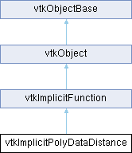

|
Etrek
|
|
Etrek
|
Implicit function that computes the distance from a point x to the nearest point p on an input vtkPolyData. More...
#include <vtkImplicitPolyDataDistance.h>

Public Member Functions | |
| vtkTypeMacro (vtkImplicitPolyDataDistance, vtkImplicitFunction) | |
| void | PrintSelf (ostream &os, vtkIndent indent) override |
| vtkMTimeType | GetMTime () override |
| double | EvaluateFunction (double x[3]) override |
| void | EvaluateGradient (double x[3], double g[3]) override |
| double | EvaluateFunctionAndGetClosestPoint (double x[3], double closestPoint[3]) |
| void | SetInput (vtkPolyData *input) |
| virtual void | EvaluateFunction (vtkDataArray *input, vtkDataArray *output) |
| virtual double | EvaluateFunction (double x, double y, double z) |
| vtkSetMacro (NoValue, double) | |
| vtkGetMacro (NoValue, double) | |
| vtkSetVector3Macro (NoGradient, double) | |
| vtkGetVector3Macro (NoGradient, double) | |
| vtkSetVector3Macro (NoClosestPoint, double) | |
| vtkGetVector3Macro (NoClosestPoint, double) | |
| vtkGetMacro (Tolerance, double) | |
| vtkSetMacro (Tolerance, double) | |
| Public Member Functions inherited from vtkImplicitFunction | |
| vtkTypeMacro (vtkImplicitFunction, vtkObject) | |
| virtual void | FunctionValue (vtkDataArray *input, vtkDataArray *output) |
| double | FunctionValue (const double x[3]) |
| double | FunctionValue (double x, double y, double z) |
| void | FunctionGradient (const double x[3], double g[3]) |
| double * | FunctionGradient (const double x[3]) VTK_SIZEHINT(3) |
| double * | FunctionGradient (double x, double y, double z) VTK_SIZEHINT(3) |
| virtual void | SetTransform (vtkAbstractTransform *) |
| virtual void | SetTransform (const double elements[16]) |
| vtkGetObjectMacro (Transform, vtkAbstractTransform) | |
| Public Member Functions inherited from vtkObject | |
| vtkBaseTypeMacro (vtkObject, vtkObjectBase) | |
| virtual void | DebugOn () |
| virtual void | DebugOff () |
| bool | GetDebug () |
| void | SetDebug (bool debugFlag) |
| virtual void | Modified () |
| void | PrintSelf (ostream &os, vtkIndent indent) override |
| void | RemoveObserver (unsigned long tag) |
| void | RemoveObservers (unsigned long event) |
| void | RemoveObservers (const char *event) |
| void | RemoveAllObservers () |
| vtkTypeBool | HasObserver (unsigned long event) |
| vtkTypeBool | HasObserver (const char *event) |
| vtkTypeBool | InvokeEvent (unsigned long event) |
| vtkTypeBool | InvokeEvent (const char *event) |
| std::string | GetObjectDescription () const override |
| unsigned long | AddObserver (unsigned long event, vtkCommand *, float priority=0.0f) |
| unsigned long | AddObserver (const char *event, vtkCommand *, float priority=0.0f) |
| vtkCommand * | GetCommand (unsigned long tag) |
| void | RemoveObserver (vtkCommand *) |
| void | RemoveObservers (unsigned long event, vtkCommand *) |
| void | RemoveObservers (const char *event, vtkCommand *) |
| vtkTypeBool | HasObserver (unsigned long event, vtkCommand *) |
| vtkTypeBool | HasObserver (const char *event, vtkCommand *) |
| template<class U, class T> | |
| unsigned long | AddObserver (unsigned long event, U observer, void(T::*callback)(), float priority=0.0f) |
| template<class U, class T> | |
| unsigned long | AddObserver (unsigned long event, U observer, void(T::*callback)(vtkObject *, unsigned long, void *), float priority=0.0f) |
| template<class U, class T> | |
| unsigned long | AddObserver (unsigned long event, U observer, bool(T::*callback)(vtkObject *, unsigned long, void *), float priority=0.0f) |
| vtkTypeBool | InvokeEvent (unsigned long event, void *callData) |
| vtkTypeBool | InvokeEvent (const char *event, void *callData) |
| virtual void | SetObjectName (const std::string &objectName) |
| virtual std::string | GetObjectName () const |
| Public Member Functions inherited from vtkObjectBase | |
| const char * | GetClassName () const |
| virtual vtkTypeBool | IsA (const char *name) |
| virtual vtkIdType | GetNumberOfGenerationsFromBase (const char *name) |
| virtual void | Delete () |
| virtual void | FastDelete () |
| void | InitializeObjectBase () |
| void | Print (ostream &os) |
| void | Register (vtkObjectBase *o) |
| virtual void | UnRegister (vtkObjectBase *o) |
| int | GetReferenceCount () |
| void | SetReferenceCount (int) |
| bool | GetIsInMemkind () const |
| virtual void | PrintHeader (ostream &os, vtkIndent indent) |
| virtual void | PrintTrailer (ostream &os, vtkIndent indent) |
| virtual bool | UsesGarbageCollector () const |
Static Public Member Functions | |
| static vtkImplicitPolyDataDistance * | New () |
| Static Public Member Functions inherited from vtkObject | |
| static vtkObject * | New () |
| static void | BreakOnError () |
| static void | SetGlobalWarningDisplay (vtkTypeBool val) |
| static void | GlobalWarningDisplayOn () |
| static void | GlobalWarningDisplayOff () |
| static vtkTypeBool | GetGlobalWarningDisplay () |
| Static Public Member Functions inherited from vtkObjectBase | |
| static vtkTypeBool | IsTypeOf (const char *name) |
| static vtkIdType | GetNumberOfGenerationsFromBaseType (const char *name) |
| static vtkObjectBase * | New () |
| static void | SetMemkindDirectory (const char *directoryname) |
| static bool | GetUsingMemkind () |
Protected Member Functions | |
| void | CreateDefaultLocator () |
| double | SharedEvaluate (double x[3], double g[3], double closestPoint[3]) |
| Protected Member Functions inherited from vtkObject | |
| void | RegisterInternal (vtkObjectBase *, vtkTypeBool check) override |
| void | UnRegisterInternal (vtkObjectBase *, vtkTypeBool check) override |
| void | InternalGrabFocus (vtkCommand *mouseEvents, vtkCommand *keypressEvents=nullptr) |
| void | InternalReleaseFocus () |
| Protected Member Functions inherited from vtkObjectBase | |
| virtual void | ReportReferences (vtkGarbageCollector *) |
| vtkObjectBase (const vtkObjectBase &) | |
| void | operator= (const vtkObjectBase &) |
Protected Attributes | |
| double | NoGradient [3] |
| double | NoClosestPoint [3] |
| double | NoValue |
| double | Tolerance |
| vtkPolyData * | Input |
| vtkCellLocator * | Locator |
| vtkSMPThreadLocalObject< vtkGenericCell > | TLCell |
| vtkSMPThreadLocalObject< vtkIdList > | TLCellIds |
| Protected Attributes inherited from vtkImplicitFunction | |
| vtkAbstractTransform * | Transform |
| double | ReturnValue [3] |
| Protected Attributes inherited from vtkObject | |
| bool | Debug |
| vtkTimeStamp | MTime |
| vtkSubjectHelper * | SubjectHelper |
| std::string | ObjectName |
| Protected Attributes inherited from vtkObjectBase | |
| std::atomic< int32_t > | ReferenceCount |
| vtkWeakPointerBase ** | WeakPointers |
Additional Inherited Members | |
| Static Protected Member Functions inherited from vtkObjectBase | |
| static vtkMallocingFunction | GetCurrentMallocFunction () |
| static vtkReallocingFunction | GetCurrentReallocFunction () |
| static vtkFreeingFunction | GetCurrentFreeFunction () |
| static vtkFreeingFunction | GetAlternateFreeFunction () |
Implicit function that computes the distance from a point x to the nearest point p on an input vtkPolyData.
Implicit function that computes the distance from a point x to the nearest point p on an input vtkPolyData. The sign of the function is set to the sign of the dot product between the angle-weighted pseudonormal at the nearest surface point and the vector x - p. Points interior to the geometry have a negative distance, points on the exterior have a positive distance, and points on the input vtkPolyData have a distance of zero. The gradient of the function is the angle-weighted pseudonormal at the nearest point.
Baerentzen, J. A. and Aanaes, H. (2005). Signed distance computation using the angle weighted pseudonormal. IEEE Transactions on Visualization and Computer Graphics, 11:243-253.
This code was contributed in the VTK Journal paper: "Boolean Operations on Surfaces in VTK Without External Libraries" by Cory Quammen, Chris Weigle C., Russ Taylor http://hdl.handle.net/10380/3262 http://www.midasjournal.org/browse/publication/797
|
protected |
Create default locator. Used to create one when none is specified.
|
inlinevirtual |
Evaluate plane equation of nearest triangle to point x[3].
Reimplemented from vtkImplicitFunction.
|
overridevirtual |
Evaluate function at position x-y-z and return value. You should generally not call this method directly, you should use FunctionValue() instead. This method must be implemented by any derived class.
Implements vtkImplicitFunction.
|
virtual |
Evaluate plane equation of nearest triangle to point x[3].
Reimplemented from vtkImplicitFunction.
| double vtkImplicitPolyDataDistance::EvaluateFunctionAndGetClosestPoint | ( | double | x[3], |
| double | closestPoint[3] ) |
Evaluate plane equation of nearest triangle to point x[3] and provides closest point on an input vtkPolyData.
|
overridevirtual |
Evaluate function gradient of nearest triangle to point x[3].
Implements vtkImplicitFunction.
|
overridevirtual |
Return the MTime also considering the Input dependency.
Reimplemented from vtkImplicitFunction.
|
overridevirtual |
Methods invoked by print to print information about the object including superclasses. Typically not called by the user (use Print() instead) but used in the hierarchical print process to combine the output of several classes.
Reimplemented from vtkImplicitFunction.
| void vtkImplicitPolyDataDistance::SetInput | ( | vtkPolyData * | input | ) |
Set the input vtkPolyData used for the implicit function evaluation. Passes input through an internal instance of vtkTriangleFilter to remove vertices and lines, leaving only triangular polygons for evaluation as implicit planes.
| vtkImplicitPolyDataDistance::vtkGetMacro | ( | Tolerance | , |
| double | ) |
Set/get the tolerance used for the locator.
| vtkImplicitPolyDataDistance::vtkSetMacro | ( | NoValue | , |
| double | ) |
Set/get the function value to use if no input vtkPolyData specified.
| vtkImplicitPolyDataDistance::vtkSetVector3Macro | ( | NoClosestPoint | , |
| double | ) |
Set/get the closest point to use if no input vtkPolyData specified.
| vtkImplicitPolyDataDistance::vtkSetVector3Macro | ( | NoGradient | , |
| double | ) |
Set/get the function gradient to use if no input vtkPolyData specified.